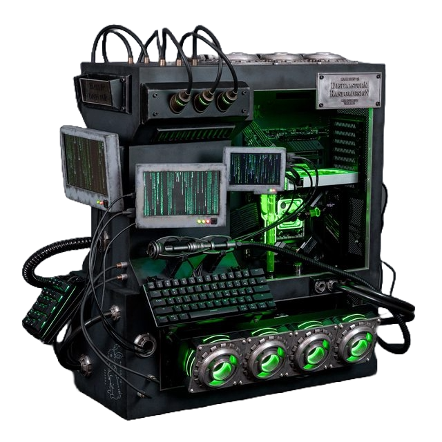
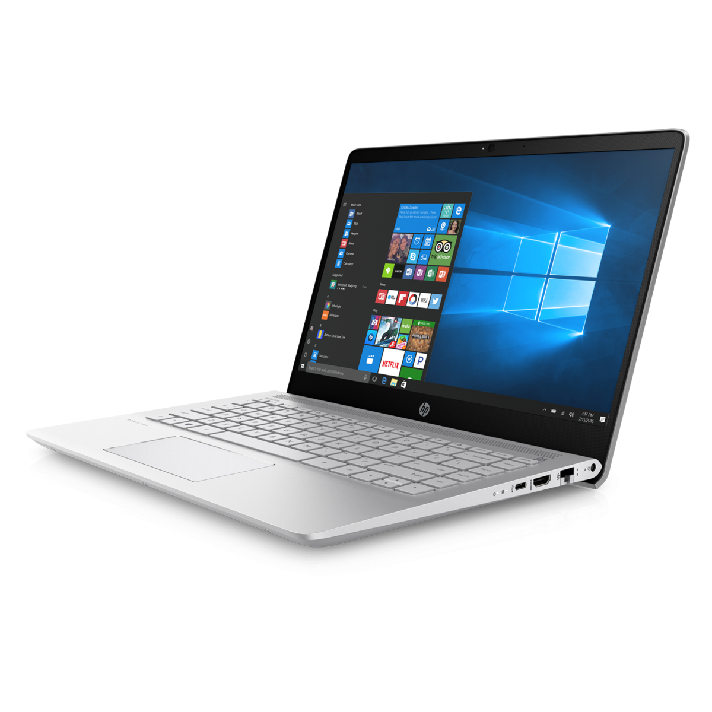
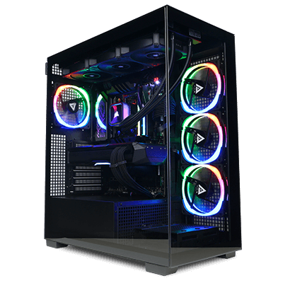

El modding en PCs es una práctica de personalización que involucra transformar computadoras tanto estética como funcionalmente. Los entusiastas utilizan técnicas creativas como pintura, iluminación personalizada y modificaciones internas para destacar la individualidad y la innovación.
Pc Modding

Las PCs de oficina están diseñadas para tareas comerciales y productividad en entornos empresariales. Son computadoras asequibles optimizadas para realizar tareas estándar de oficina, como procesamiento de texto y hojas de cálculo, sin centrarse en rendimiento gráfico o capacidades de juego.
Pc Office

Las PCs gamers son computadoras optimizadas para ofrecer un rendimiento superior en juegos, con hardware potente, tarjetas gráficas avanzadas, procesadores rápidos y sistemas de refrigeración eficientes. Su diseño está centrado en proporcionar una experiencia de juego fluida y de alta calidad.
Pc Gaming